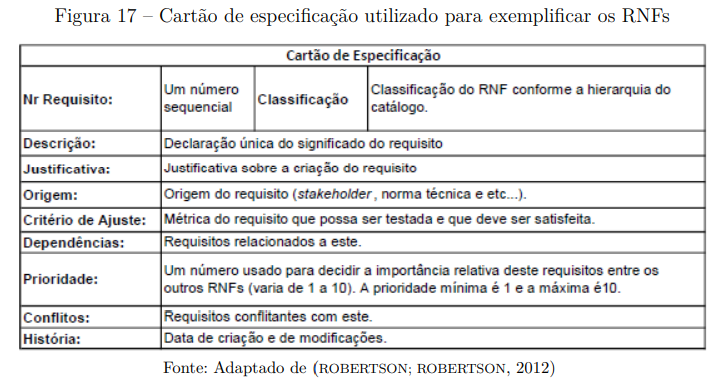

NFR
Introdução
O NFR Framework é uma abordagem para representar e analisar Requisitos Não-Funcionais. Seu objetivo é ajudar desenvolvedores na implementação de soluções personalizadas, levando em consideração as características do domínio e do sistema em questão. Tais características incluem Requisitos Não-funcionais, Requisitos funcionais, prioridades e carga de trabalho [1].
SIG - Softgoal Interdependency Graph
O framework pode ser visualizado através do softgoal conhecido como SIG (Softgoal Interdependency Graph), que é um gráfico onde registra as considerações do desenvolvedor sobre os softgoals, mostrando suas interdependências e armazenando de forma gráfica as decisões de desenvolvimento [2].
O registro gráfico das decisões inclui RNFs (Requisitos Não-funcionais) e suas alternativas, decisões e justificativas associadas às decisões [2].
Tipos de Softgoals
Citado anteriormente, um softgoal é um objetivo que não possui uma clara definição nem critérios de satisfação precisos. E nesse quesito, existem três tipos de softgoals: Softgoals NFR, Softgoals de Operacionalização e Softgoals de Afirmação [2].
- Softgoals NFR: representam os Requisitos Não-Funcionais e podem estar inter-relacionados, em catálogos e mostrados de forma hierárquica;
Figura 1: Softgoal NFR.

Fonte: (SILVA, 2019)
- Softgoals de Operacionalização: representam soluções de implementação para satisfazer softgoals NFR ou outros softgoals de operacionalização;
Figura 2: Softgoal de Operacionalização.

Fonte: (SILVA, 2019)
- Softgoals de Afirmação: permitem que as características do domínio (como prioridades e carga de trabalho) sejam consideradas e devidamente refletidas no processo de tomada de decisão.
Figura 3: Softgoal de Afirmação.

Fonte: (SILVA, 2019)
Interdependências
As interdependências definem as relações entre os softgoals. Os tipos de interdependências utilizadas pelo framework são os refinamentos e as contribuições [3].
Decomposições
As decomposições têm o objetivo de refinar softgoals para obter softgoals mais especializados e estes possam auxiliar na construção do projeto. Os quatro tipos de decomposições utilizadas pelo NFR Framework são descritos a seguir e apresentados na figura 4:
- Decomposição NFR: Refina ou subdivide um sofgoal NFR em outros softogals específicos, é util para quebrar problemas grandes em problemas menores [3];
- Decomposição de Operacionalização: Refinina ou subdivide um sofgoal de operacionalização em outros do mesmo tipo porém mais específicos, é útil para refinar uma solução geral em soluções mais específicas [3];
- Decomposição de Afirmação (Claims): Refina um softgoal de afirmação em outros de afirmação, é útil para apoiar ou negar justificavas específicas do projeto que está sendo desenvolvido [4];
- Decomposição de Priorização: É um tipo especial de decomposição, nela ocorre o refinamento de um softgoal em outro do mesmo tipo e tópicos, porém com uma prioridade associada [4].
Figura 4: Tipos de decomposição.
Fonte: (SILVA, 2019)
Contribuições
No NFR framework é possível a utilização de diversos tipos de contribuições que descrevem como a satisfação ou não de um softgoal descendente contribui para a satisfação do softgoal ascendente. A seguir, os tipos de contribuição utilizadas pelo framework: [5]
- AND: se os softgoals descendentes forem satisfeitos, os softgoals ascendentes serão satisfeitos [5];
- OR: se algum softgoal descendente for satisfeito, o ascendente será satisfeito [5];
- MAKE(++): fornece uma contribuição positiva entre um softgoal descendente e um softgoal ascendente no qual é concebida no nível mais alto de satisfação, assim, ao utilizar MAKE, se o softgoal descendente for satisfeito o softgoal pai também será [5];
- BREAK(--): fornece uma contribuição negativa entre um softgoal descendente e um softgoal ascendente no qual é concebida no nível mais alto de negagação, assim, ao utilizar BREAK, se o softgoal descendente for satisfeito o softgoal pai será negado (não satisfeito) [5];
- HELP(+): fornece uma contribuição parcialmente positiva entre um softgoal descendente e um softgoal ascendente [5];
- HURT(-): fornece uma contribuição parcialmente negativa entre um softgoal descendente e um softgoal ascendente [5];
- UNKNOWN(?): fornece uma contribuição desconhecida entre um softgoal descendente e um softgoal ascendente, podendo ser tanto positiva quanto negativa [5];
- EQUALS: determina que o softgoal descendente só será satisfeito se o softgoal ascendente for satisfeito e que softgoal descendente será negado se o softgoal ascendente for negado [5];
- SOME: é utilizada quando o sinal da contribuição é conhecido, mas a extensão não é [5].
Procedimento de avaliação
Com o procedimento de avaliação, é possível determinar o grau que os requisitos não funcionais (RNFs) são satisfeitos por um conjunto de decisões. Assim, o procedimento determina se cada softgoal ou interdependência do SIG foi suficientemente satisfeito. E para isso, são atribuídos rótulos, que são classificados em: satisfeito, fracamente satisfeito, negado, fracamente negado, conflitante, indeterminado [6].
Esses rótulos são ilustrados na Figura 5.
Figura 5: Tipos de Rótulos.
Fonte: (SILVA, 2019)
Tabela de contribuições
| Aluno | Descrição | Links |
|---|---|---|
| Heyttor Augusto | Criação dos CNFR01, CNFR02 e os diagramas de desempenho e usabilidade | CNFR01, CNFR02 |
| João Pedro | Criação dos CNFR03, CNFR04 e os diagramas de compatibilidade e segurança | CNFR03, CNFR04 |
| Nayra Nery | Criação dos CNFR05 e CNFR06 | CNFR05, CNFR06 |
| Miqueias Ezequiel | Criação dos CNFR07 e CNFR08 | CNFR07, CNFR08 |
| Luan Vinícius | Criação dos CNFR09, CNFR10 e CNFR11 | CNFR09, CNFR10, CNFR11 |
| Rivadalvio Joaquim | Criação dos CNFR12 e CNRF13 | CNFR12, CNFR13 |
| Samuel Felipe | Criação do CNFR14 | CNFR14 |
Lista de Requisitos
Cartões de Especificação
O gerenciamento dos requisitos não-funcionais (RNFs) será padronizado pelo uso do cartão de especificação de Silva (2019, p. 45) [7], apresentado na Figura 6, visando garantir rigor e consistência. O modelo define que cada RNF seja decomposto em campos claros, como número sequencial, classificação hierárquica, descrição, justificativa, origem, critério de ajuste, dependências, prioridade, conflitos e histórico de alterações. Este método foi escolhido por facilitar diretamente as atividades de rastreabilidade e validação no decorrer do desenvolvimento.

Figura 6: Modelo do cartão de especificação utilizado.
CNFR01 - O software deve ter telas simples com poucos textos
Autor: Heyttor Augusto
| Campo | Detalhamento |
|---|---|
| Nr Requisito | CNFR01 |
| Classificação | usabilidade |
| Descrição | O sistema deve ter telas simples com poucos textos |
| Justificativa | Garante dinamismo, acessibilidade para pessoas com pouca experiência com tecnologia e facilita o entendimento |
| Origem | RNF01 |
| Critério de Ajuste | - |
| Dependências | - |
| Prioridade | 6 |
| Conflitos | — |
| História | Criado em 19/10/2025 |
CNFR02 - A transição de telas durante o fluxo de aposta deve ser fluída e sem travamentos perceptíveis
Autor: Heyttor Augusto
| Campo | Detalhamento |
|---|---|
| Nr Requisito | CNFR02 |
| Classificação | Desempenho |
| Descrição | A transição de telas durante o fluxo de aposta deve ser fluida e sem travamentos perceptíveis |
| Justificativa | Garante dinamismo e fluidez durante o uso |
| Origem | RNF08 |
| Critério de Ajuste | - |
| Dependências | RNF04 O resultado de uma loteria deve ser carregado e exibido na tela em menos de 3 segundos sob uma conexão 4G/5G |
| Prioridade | 7 |
| Conflitos | — |
| História | Criado em 19/10/2025 |
Validação - CNFR01 e CNFR02
Foram realizadas no dia 20/10/2025 pelo estudante Heyttor Augusto e o usuário Marcio Junio.
CNFR03 - Acessibilidade para Idosos e PCDs
Autor: João Pedro
| Campo | Detalhamento |
|---|---|
| Nr Requisito | NFR01 |
| Classificação | Usabilidade/Acessibilidade |
| Descrição | O sistema deve ser acessível para idosos e pessoas com deficiência visual, com texto aumentável, alto contraste e compatibilidade com leitores de tela. |
| Justificativa | Inclusão digital e conformidade com leis de acessibilidade; atendimento a usuários com baixa visão ou limitações motoras. |
| Origem | RF33 |
| Critério de Ajuste | - Texto aumentável em 200% - Contraste mínimo 7:1 - Compatível com VoiceOver/TalkBack - Navegação por voz funcional |
| Dependências | RNF11 |
| Prioridade | 6 |
| Conflitos | RNF01 - Telas simples podem limitar opções de acessibilidade |
| História | Criado em 19/10/2025 |
CNFR04 - Performance em Dispositivos Antigos
Autor: João Pedro
| Campo | Detalhamento |
|---|---|
| Nr Requisito | NFR02 |
| Classificação | Desempenho |
| Descrição | O sistema deve funcionar adequadamente em dispositivos Android/iOS com mais de 3 anos, mesmo com hardware limitado e conexões instáveis. |
| Justificativa | Grande parcela de usuários possui dispositivos antigos; performance ruim leva ao abandono do aplicativo. |
| Origem | RNF22, RNF23 |
| Critério de Ajuste | - Funcionamento em Android 8+ e iOS 12+ - Uso de RAM ≤150MB - Carregamento ≤5s em 3G - Estável com 3% de perda de pacotes |
| Dependências | RNF04, RNF08 |
| Prioridade | 7 |
| Conflitos | RNF06 - Interface rica pode impactar performance |
| História | Criado em 19/10/2025 |
Validação com o Usuário (NRFs - CNFR03 e CNFR04)
| Participante | Função | Data | Horário | Local |
|---|---|---|---|---|
| João Pedro | Integrante do grupo, responsável por coordenar a validação com o usuário. | 20/10/2025 | 20:20 | Presencial, residência |
| Janice José Araújo | 49 anos, funcionária pública e usuária do app Loterias Caixa, responsável por validar as NRFs desenvolvidas para o artefato. | 20/10/2025 | 20:20 | Presencial, residência |
CNFR05 - Feedback Visual Imediato ao Adicionar Aposta
Autor: Nayra Nery
| Campo | Detalhamento |
|---|---|
| Nr Requisito | NFR05 |
| Classificação | Usabilidade |
| Descrição | O sistema deve fornecer feedback visual imediato quando o usuário adiciona uma aposta ao carrinho, por meio de uma animação, mensagem ou alteração no ícone do carrinho. |
| Justificativa | Garante que o usuário perceba claramente que sua ação foi realizada com sucesso, evitando confusão e múltiplos cliques. Melhora a experiência e a confiança na interação com o sistema. |
| Origem | RNF09 |
| Critério de Ajuste | - Exibir confirmação visual em até 1 segundo após adicionar a aposta - Feedback deve permanecer visível por pelo menos 2 segundos - Mensagem ou ícone deve ser compreensível e não intrusivo |
| Dependências | RNF03, RNF08 |
| Prioridade | 6 |
| Conflitos | RNF06 - Feedback sonoro pode ser redundante ou distrativo |
| História | Criado em 20/10/2025 |
CNFR06 - Expiração Automática de Sessão por Inatividade
Autor: Nayra Nery
| Campo | Detalhamento |
|---|---|
| Nr Requisito | NFR06 |
| Classificação | Segurança |
| Descrição | A sessão do usuário deve expirar automaticamente após 15 minutos de inatividade, exigindo novo login para continuar o uso do aplicativo. |
| Justificativa | Protege informações pessoais e financeiras do usuário em caso de esquecimento do aplicativo aberto, evitando acessos indevidos. |
| Origem | RNF10 |
| Critério de Ajuste | - Encerrar sessão após 15±1 minutos sem interação - Exibir mensagem de aviso antes da expiração - Redirecionar automaticamente para a tela de login |
| Dependências | RNF05 |
| Prioridade | 8 |
| Conflitos | RNF03 - Persistência de dados temporários pode impedir o encerramento completo da sessão |
| História | Criado em 20/10/2025 |
Validação - CNFR05 e CNFR06
CNFR07 - Navegação Intuitiva e Fluidez da Experiência
Autor: Miqueias Ezequiel
| Campo | Detalhamento |
|---|---|
| Nr Requisito | NFR03 |
| Classificação | Usabilidade |
| Descrição | A navegação entre a seleção de jogos, o preenchimento do volante e o carrinho de compras deve ser intuitiva, permitindo que o usuário conclua o processo em no máximo 3 toques. |
| Justificativa | Uma navegação simplificada aumenta a eficiência da interação e reduz erros do usuário, resultando em uma melhor experiência e maior engajamento com o aplicativo. |
| Origem | RNF03 |
| Critério de Ajuste | - No máximo 3 toques para completar o fluxo de aposta - Transição entre telas ≤ 1,5s - Interface responsiva e consistente entre dispositivos |
| Dependências | - |
| Prioridade | 7 |
| Conflitos | - |
| História | Criado em 20/10/2025 |
CNFR08 - Desempenho e Agilidade na Exibição de Resultados
Autor: Miqueias Ezequiel
| Campo | Detalhamento |
|---|---|
| Nr Requisito | NFR04 |
| Classificação | Desempenho |
| Descrição | O aplicativo deve carregar e exibir o resultado de uma loteria em menos de 3 segundos sob uma conexão móvel 4G ou 5G padrão. |
| Justificativa | O tempo de carregamento afeta diretamente a percepção de qualidade e confiabilidade. Resultados lentos reduzem o engajamento e podem impactar negativamente a reputação do aplicativo. |
| Origem | RNF04 |
| Critério de Ajuste | - Tempo de carregamento ≤ 3s em 4G/5G - Utilização de cache para resultados recentes - Estável com até 3% de perda de pacotes |
| Dependências | - |
| Prioridade | 8 |
| Conflitos | - |
| História | Criado em 20/10/2025 |
Validação backlog CNFR07 - CNFR08
Foram realizadas no dia 20/10/2025 pelo estudante Miqueias Ezequiel e o usuario Matheus Queiroz
CNFR09 – Diferenciação visual dos números selecionados
Autor: Luan Vinícius
| Campo | Detalhamento |
|---|---|
| Nr Requisito | CNFR09 |
| Classificação | Usabilidade |
| Descrição | Os números selecionados no volante digital devem ser claramente diferenciados dos não selecionados, através de cor e contraste. |
| Justificativa | Melhorar a clareza visual e reduzir erros de seleção durante a escolha dos números da aposta. |
| Origem | RNF06 |
| Critério de Ajuste | Pelo menos 95% dos usuários devem ser capazes de identificar corretamente os números selecionados durante testes de usabilidade. |
| Dependências | RF17, RF18 |
| Prioridade | 8 |
| Conflitos | Nenhum identificado |
| História | Criado em 21/10/2025 |
CNFR10 – Estabilidade durante criação e pagamento de apostas
Autor: Luan Vinícius
| Campo | Detalhamento |
|---|---|
| Nr Requisito | CNFR10 |
| Classificação | Confiabilidade |
| Descrição | O aplicativo não deve apresentar erros ou fechar inesperadamente durante o processo de criação e pagamento de uma aposta. |
| Justificativa | Garantir a continuidade das operações e a confiança do usuário em processos financeiros críticos. |
| Origem | RNF07 |
| Critério de Ajuste | O sistema não deve apresentar falhas ou travamentos em 99% dos testes de criação e pagamento de apostas. |
| Dependências | RF17, RF22, RF24 |
| Prioridade | 10 |
| Conflitos | Nenhum identificado |
| História | Criado em 21/10/2025 |
CNFR11 – Interface autoexplicativa e acessível
Autor: Luan Vinícius
| Campo | Detalhamento |
|---|---|
| Nr Requisito | CNFR11 |
| Classificação | Usabilidade |
| Descrição | O sistema deve garantir que o acesso a funcionalidades primárias seja feito através de componentes de interface autoexplicativos. Ícones de navegação, como o menu principal, devem ser acompanhados por um rótulo textual (ex: “Menu”). |
| Justificativa | Facilitar o uso do aplicativo, especialmente para novos usuários e pessoas com pouca familiaridade tecnológica. |
| Origem | RNF11 |
| Critério de Ajuste | Todos os ícones principais devem possuir um rótulo textual visível. Testes de usabilidade devem indicar 90% de sucesso em encontrar funções básicas. |
| Dependências | RF13, RF30 |
| Prioridade | 8 |
| Conflitos | Nenhum identificado |
| História | Criado em 21/10/2025 |
Validação com o Usuário (CNFR 09 - 11)
| Participante | Função | Data | Horário | Local |
|---|---|---|---|---|
| Luan Vinícius | Integrante do grupo, responsável por coordenar a validação com o usuário. | 21/10/2025 | 16:30 | Presencial |
| Matheus Queiroz | Estudante de engenharia de software e usuário do app Loterias Caixa, responsável por validar os cartões desenvolvidos. | 21/10/2025 | 16:30 | Presencial |
CNRF12 - Compatibilidade Multiplataforma
Autor: Rivadalvio Joaquim
| Campo | Detalhamento |
|---|---|
| Nr Requisito | NFR12 |
| Classificação | Compatibilidade |
| Descrição | O sistema deve funcionar de forma consistente e com a mesma qualidade em dispositivos Android e iOS, mantendo todas as funcionalidades principais em ambas as plataformas. |
| Justificativa | Garantir que todos os usuários, independente do sistema operacional, tenham acesso às mesmas funcionalidades e qualidade de experiência, ampliando o alcance do aplicativo. |
| Origem | RNF12 |
| Critério de Ajuste | - Funcionalidades idênticas em Android e iOS - Interface adaptada às diretrizes de cada plataforma - Atualizações lançadas simultaneamente - Performance similar em dispositivos equivalentes |
| Dependências | RNF11, RNF12 |
| Prioridade | 7 |
| Conflitos | RNF02 - Recursos específicos de plataforma podem limitar a uniformidade |
| História | Criado em 20/10/2025 |
CNRF13 - Tutorial Interativo e Onboarding
Autor: Rivadalvio Joaquim
| Campo | Detalhamento |
|---|---|
| Nr Requisito | NFR13 |
| Classificação | Usabilidade |
| Descrição | O sistema deve oferecer um tutorial interativo para novos usuários, explicando as funcionalidades principais de forma clara e objetiva, com opção de pular e revisitar posteriormente. |
| Justificativa | Reduz a curva de aprendizado para novos usuários, aumenta a retenção e garante que todas as funcionalidades sejam conhecidas e utilizadas adequadamente. |
| Origem | RNF30 |
| Critério de Ajuste | - Tutorial exibido na primeira execução - Cobertura de pelo menos 80% das funcionalidades principais - Duração máxima de 3 minutos - Opção de pular e acessar depois via menu de ajuda |
| Dependências | RNF03, RNF01 |
| Prioridade | 5 |
| Conflitos | RNF08 - Conteúdo adicional pode impactar performance inicial |
| História | Criado em 20/10/2025 |
CNFR14 - O sistema deve especificar a classificação indicativa
Autor: Samuel Felipe
| Campo | Detalhamento |
|---|---|
| Nr Requisito | CNFR14 |
| Classificação | Confiabilidade |
| Descrição | O sistema deve especificar a classificação indicativa de uso em seus termos de uso e ao utilizá-lo; |
| Justificativa | Garantir que os usuários do sistema são o público alvo e que a lei permite; |
| Origem | RNF15 |
| Critério de Ajuste | - Notificação de término da sessão por inatividade. |
| Dependências | - RF30, RF12, RF14 |
| Prioridade | 10 |
| Conflitos | — |
| História | Criado em 21/10/2025 |
Graficos NFR
NFR Desempenho
Os requisitos abordados neste diagrama de NFR Foram:
Figura 7: Diagrama de Desempenho.
Autor: Heyttor Augusto
NFR Usabilidade
Os requisitos abordados neste diagrama de NFR Foram:
Figura 8: Diagrama de Usabilidade.

Autor: Heyttor Augusto
NFR Compatibilidade
O requisito abordado nesse diagrama NFR foi:
Figura 9: Diagrama de Compatibilidade.

Autor: João Pedro
NFR Segurança
O requisito abordado nesse diagrama NFR foi:
Figura 10: Diagrama de Segurança.

Autor: João Pedro
NFR Confiabilidade
O requisito abordado nesse diagrama NFR foi:
Figura 11: Diagrama de Confiabilidade.

Autor: Samuel Felipe
Agradecimentos
O grupo 7 agradece o apoio das ferramentas de inteligencia artificial generativa - chatGPT, Google Gemini - na revisão gramatical e estilo de algumas partes do texto. As tecnologias foram utilzizadas para organizar e deixar o texto mais claro, alem de que fornecer alguns exemplos de codigos de mkdocs para servir de referencia para os autores. Todo o conteudo, assim como a precisão técnica e as ideias apresentadas, permanecem de responsabilidade dos autores.
Referência Bibliográfica
1. SILVA, Reinaldo Antônio da. NFR4ES: um Catálogo de Requisitos Não-Funcionais para Sistemas Embarcados. 2019. Tese (Doutorado) – Universidade Federal de Pernambuco, Recife, 2019. Cap. 2 p. 30. Disponível em: https://aprender3.unb.br/pluginfile.php/3210672/mod_resource/content/2/DISSERTA%C3%87%C3%83O%20Reinaldo%20Ant%C3%B4nio%20da%20Silva.pdf. Acesso em: 20 out. 2025.
2. SILVA, Reinaldo Antônio da. NFR4ES: um Catálogo de Requisitos Não-Funcionais para Sistemas Embarcados. 2019. Tese (Doutorado) – Universidade Federal de Pernambuco, Recife, 2019. Cap. 2 p. 31. Disponível em: https://aprender3.unb.br/pluginfile.php/3210672/mod_resource/content/2/DISSERTA%C3%87%C3%83O%20Reinaldo%20Ant%C3%B4nio%20da%20Silva.pdf. Acesso em: 20 out. 2025.
3. SILVA, Reinaldo Antônio da. NFR4ES: um Catálogo de Requisitos Não-Funcionais para Sistemas Embarcados. 2019. Tese (Doutorado) – Universidade Federal de Pernambuco, Recife, 2019. Cap. 2 p. 32. Disponível em: https://aprender3.unb.br/pluginfile.php/3210672/mod_resource/content/2/DISSERTA%C3%87%C3%83O%20Reinaldo%20Ant%C3%B4nio%20da%20Silva.pdf. Acesso em: 20 out. 2025.
4. SILVA, Reinaldo Antônio da. NFR4ES: um Catálogo de Requisitos Não-Funcionais para Sistemas Embarcados. 2019. Tese (Doutorado) – Universidade Federal de Pernambuco, Recife, 2019. Cap. 2 p. 33. Disponível em: https://aprender3.unb.br/pluginfile.php/3210672/mod_resource/content/2/DISSERTA%C3%87%C3%83O%20Reinaldo%20Ant%C3%B4nio%20da%20Silva.pdf. Acesso em: 20 out. 2025.
5. SILVA, Reinaldo Antônio da. NFR4ES: um Catálogo de Requisitos Não-Funcionais para Sistemas Embarcados. 2019. Tese (Doutorado) – Universidade Federal de Pernambuco, Recife, 2019. Cap. 2 p. 33 - 35. Disponível em: https://aprender3.unb.br/pluginfile.php/3210672/mod_resource/content/2/DISSERTA%C3%87%C3%83O%20Reinaldo%20Ant%C3%B4nio%20da%20Silva.pdf. Acesso em: 20 out. 2025.
6. SILVA, Reinaldo Antônio da. NFR4ES: um Catálogo de Requisitos Não-Funcionais para Sistemas Embarcados. 2019. Tese (Doutorado) – Universidade Federal de Pernambuco, Recife, 2019. Cap. 2 p. 38. Disponível em: https://aprender3.unb.br/pluginfile.php/3210672/mod_resource/content/2/DISSERTA%C3%87%C3%83O%20Reinaldo%20Ant%C3%B4nio%20da%20Silva.pdf. Acesso em: 20 out. 2025.
7. SILVA, Reinaldo Antônio da. NFR4ES: um Catálogo de Requisitos Não-Funcionais para Sistemas Embarcados. 2019. Tese (Doutorado) – Universidade Federal de Pernambuco, Recife, 2019. Cap. 2 p. 45. Disponível em: https://aprender3.unb.br/pluginfile.php/3210672/mod_resource/content/2/DISSERTA%C3%87%C3%83O%20Reinaldo%20Ant%C3%B4nio%20da%20Silva.pdf. Acesso em: 20 out. 2025.
Versionamento
| Versão | Data | Autor | Descrição | Revisor |
|---|---|---|---|---|
1.0 |
19/10/2025 | Heyttor Augusto | Criação da NFR e adição de alguns | Samuel Felipe |
1.1 |
19/10/2025 | João Pedro | Criação das CNFR's 3 e 4 | Rivadalvio Joaquim |
1.2 |
20/10/2025 | Nayra Nery | Criação das CNFR's 5 e 6 | Samuel Felipe |
1.3 |
20/10/2025 | João Pedro | Validação das CNFR's 3 e 4 | Rivadalvio Joaquim |
1.4 |
20/10/2025 | Miqueias Ezequiel | Validação das CNFR's 7 e 8 | Luan Vinícius |
1.5 |
21/10/2025 | Luan Vinícius | Criação das CNFR's 9, 10 e 11, adição da introdução, ref. bibliográficas e do modelo de cartão de esp., correção das âncoras | Miqueias Ezequiel |
1.6 |
21/10/2025 | Rivadalvio Joaquim | Criação das CNRF's 12 e 13 | João Pedro |
1.7 |
21/10/2025 | Heyttor Augusto | Criação dos diagramas de desempenho e usabilidade | Samuel Felipe |
1.8 |
21/10/2025 | João Pedro | Criação dos diagramas de segurança e compatibilidade, Correção dos IDs de referência à requisitos | Rivadalvio Joaquim |
1.9 |
21/10/2025 | Luan Vinícius | Adição da validação com o usuário (CNFR 09 - 11) | Miqueias Ezequiel |
2.0 |
21/10/2025 | Samuel Felipe | Criação da CNFR 14 e do diagrama de confiabilidade | Heyttor Augusto |
2.1 |
21/10/2025 | Miqueias Ezequiel | adição link CNFR's 7-8 | Luan Vinícius |